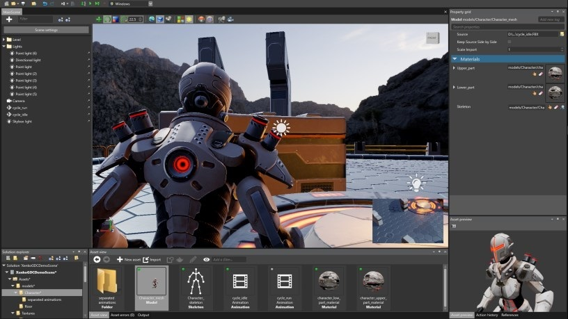

Руководство пользователя по игровому движку Stride

Эти страницы содержат информацию о том, как использовать игровой движок Stride с открытым исходным кодом на C# .
Note
Руководство Stride находится в разработке и регулярно пополняется новым контентом. Следите за обновлениями документации Stride в Twitter.
Последняя версия документации
Недавние обновления
- Новое Скрипты - Гизмо - Описание и пример гибкой системы обработки
- Новое ECS - Гибкая обработка - Описание и пример системы гибкой обработки
- Обновлено Linux - Требования к установке - добавлена Fedora OS
- Новое Скрипты - Сериализация - объяснение Сериализации
- Обновлено Скрипты - свойства и поля Public - Улучшения и дополнения контента
- Новое Движок - Entity Component model - Использование - объяснение использования ECS
- Обновлено Движок - Entity Component model - Улучшения контента
- Обновлено Stride для Unity® разработчиков - Улучшения контента
Предыдущие обновления
- Новое NuGet
- Новое Video
- Новое Cached files
- Новое iOS
- Новое Compile shaders
- Обновлено Skyboxes and backgrounds
- Обновлено Animate a camera with a model file
- Обновлено Material slots
Улучшите эту документацию
Документация Stride имеет открытый исходный код, поэтому ее может редактировать каждый. Если вы обнаружите ошибку, вы можете исправить ее или оставить комментарий в GitHub.
Чтобы отредактировать любую страницу данного руководства, нажмите ссылку Редактировать эту страницу внизу. Обязательно следуйте правилам написания [writing guidelines] (https://github.com/stride3d/stride-docs/wiki).